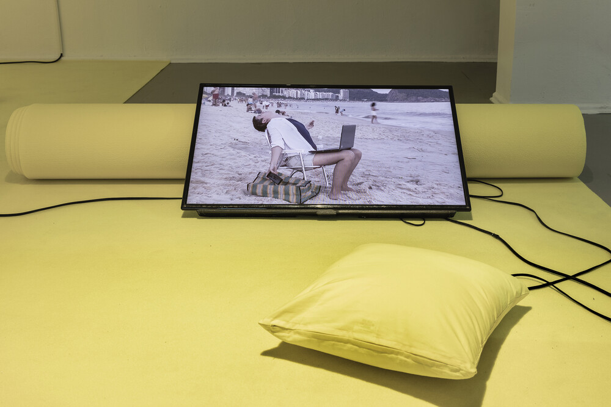

Transmediale, “for refusal”...
This edition of Transmediale is titled “for refusal.” The exhibition component, “Rendering Refusal,” is accompanied by an online program, “Almanac for Refusal,” which includes screenings, texts, talks, and other programs unfolding over the next year, culminating in the 2022 edition...
Author: Orit Gat
28 March 2021